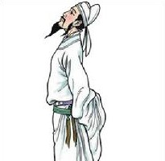
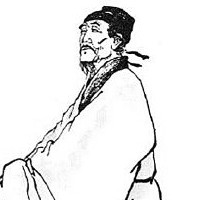
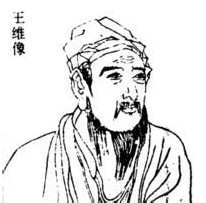
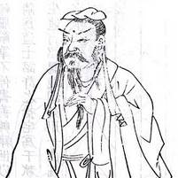
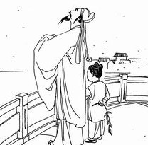

盛唐诗韵，以介绍唐朝数位著名典型诗人为主题的一个网页作品。本站以黑白简约典雅的风格设计主要介绍到了唐朝诗人李白、杜甫、王维、贺知章、孟浩然等。有什么不足之处欢迎大家批评指出！
- 
李白，字太白.
号青莲居士，有“诗仙”之称，最伟大的浪漫主义诗人。代表作有《蜀道难》、《将进酒》等诗篇，有《李太白集》传世。 - 
杜甫，字子美.
自号少陵野老，盛唐时期伟大的现实主义诗人。他忧国忧民，人格高尚，诗艺精湛，被后世尊称为“诗圣”，他的诗也被称为“诗史”。杜甫与李白合称“李杜”。 - 
王维，字摩诘.
唐朝诗人，有“诗佛”之称。王维精通佛学，受禅宗影响很大。佛教有一部《维摩诘经》，是王维名和字的由来。王维诗书画都很有名，非常多才多艺，音乐也很精通。 - 
贺知章，字季真.
号四明狂客，贺知章诗文以绝句见长，其写景、抒怀之作风格独特，清新潇洒，著名的《咏柳》《回乡偶书》两首脍炙人口，千古传诵，今尚存录入《全唐诗》共19首。 - 
孟浩然，字浩然.
唐代诗人，孟子第33代。少好节义，喜济人患难，工于诗。年四十游京师，唐玄宗诏咏其诗，至“不才明主弃”之语，玄宗谓：“卿自不求仕，朕未尝弃卿，奈何诬我？”